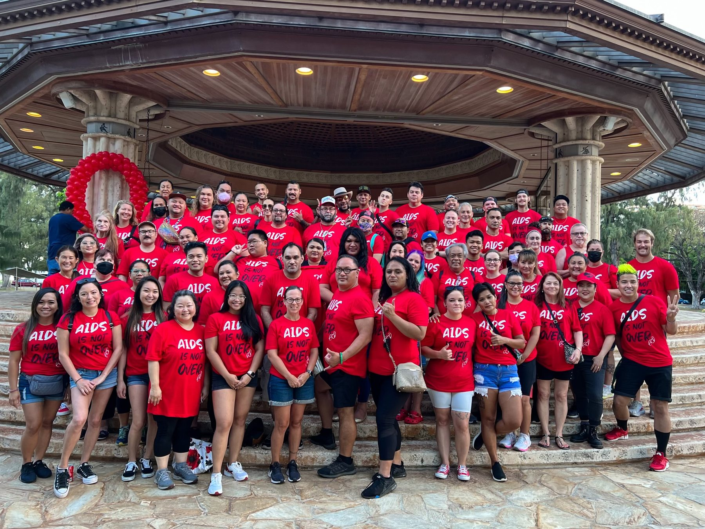

I grew up on the island of Oahu, a child of Filipino immigrants who came to Hawai’i chasing the American Dream. Hawai’i is one of the most diverse places in the world, and growing up there taught me early how many ways there are to be a person.
As a young adult, I lived in the Philippines for a period of time, which became a bit of my own “Eat, Pray, Love” chapter. I reconnected with relatives scattered across the world and spent time exploring a culture that had always been a part of me, even when I wasn't always ready to fully claim it.
Outside of work, I practice yoga and meditation. I completed my Yoga Teacher Training through Satya Yoga Cooperative and occasionally teach classes, like this sunset session back home in Hawai’i. In 2024, I completed a ten-day Vipassana meditation retreat.
These practices shape how I show up professionally: present, patient, and steady under pressure. They're also a reminder that wellbeing is something we build together, in community.
I am an avid reader, especially psychology and fantasy literature, and I travel whenever I can because it continually reminds me how much there is to learn from people and places. Living and working across Hawai’i, the Philippines, Thailand, Colorado, and New York has given me a deep appreciation for how much context shapes health.
My top themes from Gallup's CliftonStrengths assessment, and how they show up in my work.
I collect: research, frameworks, stories, and tools. In research settings this makes me a thorough investigator; in teams, a resource others draw on.
I focus on strengths, mine and others'. As a mentor and supervisor, I help people grow from good to excellent rather than fixating on weaknesses.
I sense how people are feeling. It's the foundation of my counseling work, my teaching, and the trust I build with communities and colleagues.
I have real stamina for work that matters. Teams count on me to carry projects across the finish line, from grant deliverables to outbreak response.
I think deeply before I act. In program design and evaluation, this shows up as careful framing of problems before jumping to solutions.
Rounding out my top ten are Command, Communication, Self-Assurance, Arranger, and Significance. Together they describe a leader who listens first, organizes people and resources well, communicates clearly, and isn't afraid to make the call when a team needs direction. In mentorship, that means I invest deeply in individual people. In collaboration, it means I'd rather build on what a team does well than dwell on what it doesn't.

From AIDS Walks in Honolulu and Denver to student organizations at Columbia, the throughline of my life and work is community: showing up for people, learning from them, and building things together that none of us could build alone.